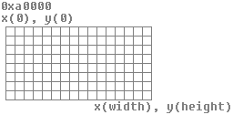

Graphics 1
Welcome!
Wait, what? Graphics already? Thats right, we will start developing an ultra-cool GUI for the OS! 😀 Okay, not really, but its a start in that direction.
This chapter is the first of a miniseries of chapters covering graphics programming. I plan to cover Vesa VBE, Video BIOS, and direct hardware programming for the VGA and, possibly, some SVGA concepts. I also plan on covering graphics concepts and rendering, including 2d vector rendering and images. Who knows; mabye a little 3d a little later.
Excited? A lot of cool material coming up in this mini series spinoff of the OS Development Series! However, before we can dive into the wonderful world of computer graphics, we have to set up a ground rule. There are a lot of ways that we can work with computer graphics, and a lot of directions that we can take. Computer graphics are a complicated topic: It cannot be covered in one chapter. Well, it can. It would just be one .. very, very long chapter.
Because of this, I decided to do this in stages. The first chapter covers working with graphics in real or v86 modes. We use the system BIOS interrupts and cover basic graphics concepts. The second chapter we will dive into Video BIOS Extensions (VBE) and Super VGA. The third chapter, will be the first chapter of a smaller miniseries covering direct hardware programming of the graphics pipeline: VGA and mabye some Super VGA topics.
So for this chapter, lets get started with working with real mode graphics using the real mode Video BIOS...
Basic Concepts
Abstract
Computer Graphics (CG) does not need an introduction. It has revolutionized the computer, animation, and video game industries. The field of computer graphics encompasses the development, creation, and continuation of the ability of producing graphical effects on computer displays. From 1D graphics, 2D, 3D, and even 4D graphics simulation software.
History
The computer graphics industry started to emerge from early projects like the Whirlwind in the 1960's. The Whirlwind was the first computer that used video display output and helped introduce the Cathode Ray Tube (CRT) technology. Whirlwind eventually led to the development of the SAGE (Air Force Semi Automatic Ground Environment) computer system. The ealiest known version of the CRT was created by Ferdinand Braun in 1897 known as the Braun tube.
The Special Interest Group on GRAPHics and Interactive Techniques (SIGGRAPH), is governed by the Association for Computing Machinery (ACM) SIGGRAPH group. Originally started in 1969 by Andy van Dam, the group hosts the SIGGRAPH conferences around the world. These conferences are attended by thousands of professionals from companies from the engineering, graphics, motion picture, and video game industries.
As graphics hardware advanced the ability of creating more powerful graphics designs emerged. As other display technologies emerges, such as Liquid Crystal Display (LCD), The use of the CRT technology started to decline.
Video Display Terminals (VDT), also known as a Video Display unit (VDU) are early display terminals.
Cathode ray tube (CRT)

Abstract (CRT)
A CRT is a vacuum tube which consists of electron guns and a phosphor target. The entire front area of the tube is scanned repetitibely in a pattern called a raster. The image is produced by changing the intensity of the three electron beams: one for red, green, and blue color components at a given point on display. These electron beams first travel through a Shadow Mask layer before hitting the phosphor coated screen.
Problems
CRT monitors can emit a small amount of X-Ray radiation. Also, do to the constant rescanning of the display, at low refresh rates (below 60Hz) flicker may be seen. CRTs may also contain some toxic phosphore. Because of this the United States Environmental Protection Agency (EPA) created a rule that CRTs must be bought to a proper recycling facility. Finally, do to the CRT containing a vaccum of glass, if the outer glass is damaged, the CRT may implode. This may cause the glass to shatter outward at dangerous speeds. Modern CRTs have certain measures in place to prevent the shattering of the CRT.
It is possible to control the frequency of the CRT using software. At higher frequency rates, it is possible to make the CRT operate faster then its intended use increasing the possibility of imploding the CRT. Because of this, it is very important to be careful when working with the CRT Controller (CRTC). Modern CRTs have protections in place to prevent this, however.
VGA
Abstract (VGA)
The Video Graphics Array (VGA) is an anolog computer display standard marketed in 1987 by IBM. It is called an "Array" because it was originally developed as a single chip, replacing dozens of logic chips in a Industry Standard Architecture (ISA) board that the MDA, CGA, and EGA used. Because this was all on a single ISA board, it was very easy to connect it to the motherboard.
The VGA consists of the video buffer, video DAC, CRT Controller, Sequencer unit, Graphics Controller, and an Attribute Controller. We will cover all of these components in more detail in later chapters.
Video Buffer
The Video Buffer is a segment of memory mapped as Video Memory. We can change what region of memory is mapped to video memory. At startup, the BIOS maps it to 0xA0000., which means that video memory is mapped to 0xA0000. (Remember the Real Mode Address Map from Tutorial 7?) We will cover memory mapping a little later in this chapter in more detail.
Video DAC
The Video Digital to Analog Converter (DAC) contains the color palette that is used to convert the video data into an analog video signal that is sent to the display. This signal indicates the red, green, and blue intensities in analog form. We will go into more detail later, so don't worry if you do not understand this yet.
CRT Controller
This controller generates horizontal and vertical synchronization signal timings, addressing for the video buffer, cursor and underline timings. We will go into more detail later when we cover the VGA hardware.
Sequencer
The Sequencer generates basic memory timings for video memory and the character clock for controlling regenerative buffer fetches. It allows the system to access memory during active display intervals. Once more, we will not cover this in detail yet.
Graphics Controller
This is the interface between video memory and the attribute controller, and between video memory and the CPU. During active display times, memory data is sent from the video buffer (Video Memory) and sent to the Attribute Controller. In Graphics Modes, this data is converted from parallel to a serial bit plane data before being sent. In text modes, Just the parallel data is sent.
Don't worry if you do not understand these yet. I do not plan on going into much detail here. We will cover everything in detail later when we talk about developing a video driver. For now, just remember that: The Graphics Controller refreshes the display from the parallel data from video memory. This is automatic based on the active display times. This simply means, that By writing to video memory (Default mapped to 0xA0000) we effectivly write to video display, depending on the current mode. This is important when printing characters.
Remember that it is possible to change the address range used by the Graphics Cotroller. When initializing, the BIOS does just this to map video memory to 0xA0000.
Video Modes
A "Video Mode" is a specification of display. That is, it describes how Video Memory is refrenced, and how this data is displayed by the video adapter.
The VGA supports two types of modes: APA Graphics, and Text.
APA Graphics
All Points Addressable (APA) is a display mode, that, on a video monitor, dot matrix, or any device that consists of a pixel array, where every cell can be refrenced individually. In the case of video display, where every cell represents a "pixel", where every pixel can be manipulated directly. Because of this, almost all graphic modes use this method. By modifying this pixel buffer, we effectivly modify individual pixels on screen.
Pixel: A "Pixel" is the smallest unit that can be represented on a display. On a display, it represents the smallest unit of color. That is, basically, a single dot. The size of each pixel depends heavily on the current resolution and video mode.
Text Modes
A Text Mode is a display mode where the content on the screen is internally represented in terms of characters rather then pixels, as with APA.
A Video Controller implimenting text mode uses two buffers: A character map representing the pixels for each individual character to be displayed, and a buffer that represents what characters are in each cell. By changing the character map buffer, we effectivly change the characters themselves, allowing us to create a new character set. By changing the Screen Buffer, which represents what characters are in each cell, we effectivly change what characters are displayed on screen. Some text modes also allow attributes, which may provide a character color, or even blinking, underlined, inversed, brightened, etc.
MDA, CGA, EGA
Remember that VGA is based off of MDA, CGA, and EGA. VGA also supports alot of the modes these adapters do. Understanding these modes will help in better understanding VGA.
MDA
Back before I was born (Seriously 😀) in 1981, IBM developed a standard video display card for the PC. They were the Monochrome Display Adapter (MDA), and Monochrome Display and Printer Adapter (MDPA).
The MDA did not have any graphics mode of any kind. It only had a single text mode, (Mode 7) which could display 80 columns by 25 lines of high resolution text characters.
This display adapter was a common standard used in older PC's.
CGA
In 1981, IBM also developed the Color Graphics Adapter (CGA), coinsidered the first color display standard for PC's.
The CGA only supported a Color Palette of 16 colors, because it was limited to 4 bytes per pixel.
CGA supported two text modes and two graphics modes, including:
- 40x25 characters (16 color) text mode
- 18x25 characters (16 color) text mode
- 320x200 pixels (4 colors) graphics modes
- 640x200 pixels (Monochrome) graphics mode
It is possible to treak the display adapter in creating and discovering new, "undocumented" video modes. More on this later.
EGA
Introduced in 1984 by IBM, The Enhanced Graphics Adapter (EGA) produced a display of 16 colors at a resolution up to 640x350 pixels.
Remember that the VGA adapters are backward compatible, simular to the 80x86 microprocessor family. Because of this, and to insure backward compatibility, the BIOS starts up in Mode 7 (Originally from the MDA), which supports 80 columns, by 25 lines. This is important to us, because this is the mode we are in!
Video Memory
Memory Mapped I/O (MMIO)
If you know what Memory Mapped I/O is, you can skip this part.
The processor can work with reading from RAM and ROM devices. In applications programming, this is something you never see. This is made possible with MMIO devices. Memory Mapped I/O allows a hardware device to map its own RAM or ROM into your processors physical address space. This allows the processor to be able to access hardware RAM or ROM in different ways by just using a pointer to that location in the address space. This is made possible because MMIO devices uses the same physical address and data bus that the processor and system memory uses.
It is important to remember, however, that Memory Mapped I/O is a mapping to the physical address space of the processor, not actual computer memory. In some architectures, it is possible to bank switch, or provide a method to switch between either using the MMIO device mapping or the system memory "hidden" behind it, while on others it is not. What this means for us is that we cannot access the actual system memory addresses that are "hidden" by the MMIO device. For example, CMOS RAM memory is mapped into the physical address space at address 0x400. This is different then main system memory; accessing 0x400 with a pointer will access the CMOS RAM memory always do to MMIO. It is not possible to access this location in system memory in the i86 architecture.
MMIO devices allows us to have more control over the hardware - it allows high resolution video displays with limited system memory, it allows us to obtain information from a device that is kept current by a battery (CMOS RAM) that would have altherwise been lost if in system memory. Another example of an MMIO device is the system BIOS ROM itself. MMIO is what allows the processor to execute the BIOS from ROM as it is mapped to the systems physical address space. Cool, huh?
You might be wondering what this has to do with graphics. Video memory is RAM that is mapped into the physical address space. Video memory is managed by the video display device which uses MMIO to do this. How MMIO memory is managed and worked with is up to the device; it is not always nice and linear. Different graphics modes require different ways that you have to work with this memory, so understanding that it is an MMIO device is important.
An interesting fact about MMIO address space regions is that, with paging they can be mapped to any virtual address and accessed from that address. This means you can map, for example, video memory, to any virtual address you want and access video memory using that virtual address. This, of course, has to do with the way pages are mapped to frames in the physical address space.
Also remember that MMIO memory is not in system memory. Computer system memory does not need to be greater then the size of the MMIO address that you are trying to access. For example, if your system only has 2GB of system memory, you can still access the MMIO device if it has RAM mapped to the physical address space at 0xFC000000 without error.
See this text right here? Thats right, me; I am in your computer... residing in Video RAM (VRAM). VRAM is Video Memory, also known as the video framebuffer. It containes all of the pixels that you see before you, and more.
Standard VGA
Video memory is stored inside of the video device; usually a video card or onboard video adapter. Standard VGA cards have 256 KB of VRAM. It is not uncommon however to see SVGA+ cards to have much more video memory however. After all, they have to be able to store all of the pixels in the high resolution video modes somehow, right?
Remember the memory map from [chapter 7] (fix link)? We can see the Standard VGA memory resides in 0x000A0000 - 0x000BFFFF. 0xBFFFF - 0xA0000 = 0xA0000, which is 655360 bytes, or 640 KB.
It is important to remember that video memory is mapped in the PCs address space at this location. What this means is by writing here, you are writing to video memory that is located in the video adapter. This is a form of Memory Mapped I/O.
When accessing video memory, you typically access it using a "window" into the real video RAM. This is typically:
- 0xA0000 - EGA/VGA graphics modes (64 KB)
- 0xB0000 - Monochrome text mode (32 KB)
- 0xB8000 - Color text mode and CGA (32 KB)
Because different modes uses different address mappings, it is possible to combine a monochome display adapter and color adapter on the same machine. This allows a computer with a dual monitor setup to be able to run without issues. Of course, this is just standard VGA.
Super VGA
Super VGA and other display adapters typically do things differently. It is not uncommon to see a Super VGA or higher resolution display adapter to have VRAM mapped to a high address range. While they will usually support the Standard VGA memory mapped range, they can use other memory ranges as well to help with high resolution video modes or to provide additional functionality. For example, my NVideo GeForce 7600 GT has 4 memory ranges that it can use: 0xA0000 - 0x000BFFFFF (Look familier?), 0xFC000000 - 0xFCFFFFFF, 0xD0000000 - 0xDFFFFFFF, and 0xFD000000 - 0xFDFFFFFF. This can be different on your system.
Linear Frame Buffer (LFB)
If it is possible to map the entire video memory of the current display into the physical address space, it is possible to set it up to act like a linear frame buffer. A linear frame buffer is just a packed-pixel frame buffer that allows you to be able to read or write to it in linear fashion. For example, buffer[0] is the first element of the buffer, buffer[1] is the second - there is nothing special. Well, actually there is. Standard VGA does not support LFB modes. Remember Mode 0x13 above? That is the only Standard VGA video mode that creates the effect of a linear frame buffer.
This might be a little confusing. After all, how "else" can you read or write to video memory if its not in linear fashion? This has to do with Standard VGA being a planer device. We will talk about that after the next section,
Bank Switching
Super VGA and higher resolution video modes can also provide a way of using a "window" into the full video memory that is on the adapter. For example, notice above that, for graphics modes, we are limited to a 64KB region between 0xA0000 - 0xB0000. If this was a "window", and we can "move" this 64K window around, we can access a much larger video memory area. For example:
This is known as Bank Switching. A "Bank" is a window into the larger video memory. The size of the window is typically 64K do to standard VGA only having a graphics region of 64K.
Planer Memory
Okay, it gets a little tricky here. Standard VGA modes operate in planer memory mode. This is the VGAs native memory model.

The above is an example of Mode 12h's planer memory format. Mode 12h has 4 bits per pixel. To draw a pixel, you have to set or unset the bit in the plane. To better understand this, imagine you have a 64k block of video memory. Imagine it as a flat sheet of paper and put three more behind it. Each sheet of paper is a 64k "plane" that shares this same 64k area of memory. Each plane holds a little bit of information about the pixel that it is used for.
Dont worry to much about understanding planer memory and how it works, we wont be needing it in this chapter. It will be important when we cover VGA and Mode 12h in more detail however. Because we are using Mode 0x13, which hides the details of working with planer memory, we wont need it now.
Odd / Even Memory Addressing
Odd / Even Memory Addressing uses the Planer Memory model and is used in all text modes. All even addresses work with planes 0 or 2 and odd addresses work with planes 1 or 3. For example:
| Memory Address | Plane | Offset in plane |
|---|---|---|
| 0 | Plane 0 | Offset 0 |
| 1 | Plane 1 | Offset 0 |
| 2 | Plane 0 | Offset 2 |
| 3 | Plane 1 | Offset 2 |
Remember what it is like writing to video memory in text modes?
unsigned char* vmem = 0xb8000;
vmem[0] = 'a'; // plane 0 [character plane] offset 0
vmem[1] = 0x7; // plane 1 [attribute plane] offset 0
vmem[2] = 'b'; // plane 0 [character plane] offset 2
vmem[3] = 0x7; // plane 1 [attribute plane] offset 2
In text modes, plane 0 is used to store character codes and plane 1 stores the attribute bytes. Plane 2 stores the font data. If you overwrite plane 2 when writing to video memory, you will overwrite the font installed at boot time by the BIOS. This means that, if you write over plane 2 in graphics mode, and go back to text mode, the BIOS text output routines will not work as expected as the font data is corrupt.
If you would like to go back to text mode, you will either need to store your own font or backup the default font and write it back to plane 2 before using any text output routines again.
Because we are not using the planer memory model in this chapter, we wont be using the Odd/Even addressing model in this chapter.
Color Palette
A Palette is like a look-up table. A Color Palette is a look-up table for colors. For example, we can store a list of the actual color information in a table. We can then use another table of indices into that table:
| Index Table | Color Palette |
|---|---|
| 0 | red(0), green(0), blue(0) |
| 1 | red(0), green(0), blue(1) |
| 2 | red(0), green(1), blue(0) |
In the above example, we can reference whatever color we want by just using the index. That saves storage space greatly because after the look up table (The color palette) is created, any time that we want to refer to a color we just use the index.
For example, in a video mode that uses a color palette, video memory acts as the index buffer. So, to draw a pixel using the palette that we created above, just write the index of the color that you would like to use:
unsigned char* p = 0xa0000;
p[0] = 0; // black pixel
p[1] = 1; // blue pixel
p[2] = 2; // green pixel
In the VGA, the Color Palette is handled by the hardware. We can control and change the colors in the palette however way we want. However, because working with the palette requires VGA hardware programming, we will not cover it too much here. Dont worry, we will cover it when we get into VGA hardware.
Palette Animation
Okay, lets take a step back for a moment. Look at the above example again. Notice that the video display will determin what the color is of a pixel by an index. What if, lets say, that the index 1 in the color palette (Like in the above example) changes to a different color? Looking at the above example, index 1 in the color palette is a bright blue color. So, if we are in a palette video mode, any time we write a "1" to someplace in video memory, it will be that bright blue color. This means a simple memset (vidmem, 1, VIDMEM_SIZE) will effectively clear video display to this color. Cool, huh?
Knowing that the video display determins what color to display for an index is inside of the Color Palette table, we can change what the color is for any palette entry. This allows us to change the colors on screen by just updating the colors in the palette in some way. This is known as Palette Animation.
Palette Animation can create alot of really nice looking and cool effects, such as fire animation, icy effects, etc.
Mode 0x13
Abstract (Mode 0x13)
Video Mode 0x13 is a standard IBM VGA BIOS mode number for a 256 color 320x200 resolution. It uses a 256 color palette, did not have square pixels, and allowed access to the Video Memory as a Packed-Pixel Framebuffer. What this means is that it allowed access to video memory as if it was a linear buffer: Just get a pointer to video memory. pointer[0] = pixel 1, pointer[1] = pixel 2, and so on, assuming pointer is an unsigned char*. This is made possible by specific hardware register settings (The video mode "configuation") - Standard VGA does not, by itself, provide access to video memory like this.
The important thing here is that video modes define the resolution, how video memory is accessed, and hardware configuation setup for the operation of that mode. Do not worry if you do not understand everything here; we will go into detail when we cover the VGA hardware in a later chapter.
Because video Mode 0x13 is easy to work with (and fast) I decided to use it for the duration of this chapter. Some other modes require experience with the VGA hardware which I am wanting to avoid in this chapter do to its complexity. Dont worry though, I plan on covering some (Like Mode 12h, 640x480x4 color) later on.
Video Mode 0x13 was used alot in the DOS era for video games do to its simplicity to program and speed. It is a video configuation for a 320 width, 200 height pixel resolution with a 256 color palette. It is a planer video memory mode but acts as a Linear Frame Buffer (LFB) which makes it easy to program.
Color Palette (Mode 0x13)
Mode 0x13 has a color palette of 256 colors. Video memory in Mode 0x13 only stores the palette index; the video device will determin what color to render from the installed palette color table. By default, the color table is this:

Here is an example, looking at the above we can see the first color (0) is black, color 1 is blue, color 2 is green, etc. We can write these colors to video display by using these indices in the above lookup table:
unsigned char* p = 0xa0000;
*p = 0; //black pixel
*(p++) = 1; // blue pixel
*(p++) = 4; // red pixel
*(p++) = 255; //white pixel
Compare the above code to the table above and notice how the indices match with the colors in the palette.
Changing the palette
It is possible to change the palette to whatever colors that you would like. However there is not any easy BIOS interrupt for it (Not without using VBE anyways.) Most of the interrupt calls are used to set or get individual or all palette registers which are inside of the VGA Digital to Analog Converter (DAC). This requires some knowledge of the VGA hardware which I am wanting to avoid this chapter for simplicity (Dont worry, I am planning on covering that soon!) Because of this, I decided to wait on covering palette changing (And mabye palette animations) in a future chapter.
The Video BIOS Interface
The VGA Video BIOS Interface is a set of video interrupts (Software interrupt 0x10). Because these are BIOS interrupts, they can only be used in real or v86 modes.
Setting the video mode
INT 0x10 Function 0
You can set the video mode by calling BIOS interrupt 0x10 function 0:
- Input
- AH = 0
- AL = video mode
- Output
- AL = video mode flag (Phoenix, AMI BIOS)
- AL = CRT Controller (CRTC) mode byte (Phoenix 386 BIOS v1.10)
You will see the CRTC alot more in the future as it is one of the controllers that you will need to program if you plan to directly program the video hardware.
This interrupt can set any text or video mode. For example, the following switches to 320x200x8 bit [mode 0x13]: Please remember that all code samples can be found in the demo.
mode13h:
mov ah, 0
mov al, 0x13
int 0x10
ret</pre>
Easy, huh?
The above is all that is needed to get you in a graphics mode. Sure, it will only work in real or v86 mode, but it is as easy as you can get. Dont worry if you do not understand video modes yet; we will cover them a little later.
Getting the video mode
INT 0x10 Function 0xF
You can get the video mode by calling BIOS interrupt 0x10 function 0xF:
- Input
- AH = 0xF
- Output
- AH = number of character columns
- AL = display mode number
- BH = active page
This interrupt is an easy one and can be used to obtain the current video or text mode. Dont worry about the "active page" part yet. Dont worry if you do not understand video modes yet; we will cover them a little later.
getMode:
mov ah, 0xf
int 0x10
ret
Other Video BIOS Interrupts
INT 0x10 Function 0xB/BH=1
You can set the palette by calling Video BIOS INT 0x10 function 0xB:
- Input
- AH = 0xB
- BH = 1
- BL = Palette ID
- 00h background, green, red, and brown/yellow
- 01h background, cyan, magenta, and white
This interrupt may not be supported on all systems.
INT 0x10 Function 0xC
You can write a pixel to the display using this interrupt.
- Input
- AH = 0xC
- BH = Page number
- AL = Pixel color
- if bit 7 set, value is XOR'ed onto screen except in 256-color modes
- CX = column
- DX = row
- Output
- AL = pixel color
This interrupt can only be used in graphics modes.
INT 0x10 Function 0xD
You can read the pixel by calling Video BIOS INT 0x10 function 0xB:
- Input
- AH = 0xC
- BH = Page number
- CX = column
- DX = row
This interrupt will only work on graphics modes.
Primitives
Plotting your first pixel
"The secret to making any video game is the ability to change the color of a pixel." - Teej
We have covered alot in this chapter and have yet to draw a pixel on screen. Whats up with that? I decided to close this chapter with the basics of most basic graphics primitives - rendering a pixel to the screen.
Because we are working in Mode 0x13, remember that it acts like a linear frame buffer. So vidmem[0] is the first byte of video memory, vidmem[1] is the second byte. Also, remember that Mode 0x13 uses a byte for each pixel as an index into the Color Palette. This means that, we can write a pixel easy like this:
unsigned char* p = 0xa0000;
p[0] = 1; // blue pixel
Cool, huh? Thats all that is needed and you have a pixel!
It is easier to think in terms of the cartesian coordinate system. In this system, we use coordinates, such as X and Y to represent its location on a 2d graph like this:

The top-left corner of video memory is at v = [0,0] where v is a 2d vector. This is the first pixel in video display. The last byte is at v = [width, height]. Assuming each coordinate is a pixel, we can come up with a formula that allows us to be able to draw a pixel at any location on screen.
Lets say we start at v = [0,0] in the graph above. If we add width to our position, we always end up right below where we were. For example, in the above graph, width = 16. Assuming we started at the top-left corner, counting 16 to the right, you will find yourself right below (on the next line) from where you started. Because of this, we can calculate y by doing y * width. Afterwords we can just add x (The offset in that line) and we have our formula:

To render a pixel at any [x,y] location, we use the formula x + y * width. With this, we can create a simple routine like this:
;-----------------------;
; renders pixel
; cl = color ax = y bx = x
; es:bp = buffer
;-----------------------;
pixel:
; [x + y * width] = col
pusha
mov di, VGA_MODE13_WIDTH
mul di ; ax = y * width
add ax, bx ; add x
mov di, ax
mov byte [es:bp + di], cl ; plot pixel
popa
ret
es:bp points to the video display, or another buffer that we want to render to. cl is the color index that you want to use, ax is the Y location and bx is the X location.
Clearing the screen
There are several ways of clearing the screen. This is important as alot of times when switching video modes, you may see alot of garbage on screen.
One method that we can do is just call our pixel routine above width * height times. A better method would be to write multiple pixels at once. Knowing, for example, that the size of a pixel in Mode 13h is a byte, we can easily store 2 bytes (2 pixels) in a word size register and use that instead:
;---------------------------;
; clear screen
; cl = color
;---------------------------;
clrscr:
pusha
mov dl, cl ; dx = 2 pixels
mov dh, cl
mov cx, 0
xor di, di
.l:
mov word [es:bp + di], dx ; plot 2 pixels
inc di ; go forward 2 bytes
inc di
inc cx
cmp cx, (VGA_MODE13_WIDTH * VGA_MODE13_HEIGHT) / 2 ;end of display?
jl .l
popa
ret
es:bp refers to either video memory or another buffer and cl is the color that you would like to use.
Demo
This demo spices what we talked about a little by adding an additional routines: line, which renders a horizontal line, and is used to render the rectangles in the demo.
Conclusion
That's all for this chapter!
The next chapter will cover VESA VBE and how we can use it to work with high resolution graphics modes. We will also cover the Super VGA, Bank Switching, and a few more graphics concepts including Double and Triple Buffering, and Page Flipping. Thats right, we are going high resolution with VBE 😀
We will also be going back to C in the next chapter and cover some more graphics primitives. I still plan on covering VGA hardware however that will be after VBE. VGA hardware is quite overcomplicated; I want to hold off on the more complex topics in graphics and VGA until a little later.